Note
Access to this page requires authorization. You can try signing in or changing directories.
Access to this page requires authorization. You can try changing directories.
OpenType supports the TrueType glyph outline format, in which a glyph outline is described as second-order Bezier splines. When outlines are rasterized, TrueType “hinting” instructions contained in a font can be used to refine the rasterized results. In particular, the TrueType instruction set provides a powerful means of controlling glyph outlines at all or specific sizes and resolutions.
This chapter introduces the basic concepts needed to create and instruct an OpenType font that contains TrueType outline data. It begins with an overview of the steps involved in taking a design from paper to the creation of a bitmap that can be sent to an output device and follows with a closer look at each of the steps in the process.
This chapter includes an introduction to TrueType instructions and how they are interpreted. Other chapters provide in-depth details:
In the remainder of this chapter, “TrueType font” will be used to mean OpenType fonts that have TrueType glyph outlines.
From design to font file
A TrueType font can originate as a new design drawn on paper or created on a computer screen. TrueType fonts can also be obtained by converting fonts from other formats. Whatever the case, it is necessary to create a TrueType font file that, among other things, describes each glyph in the font as an outline in the TrueType format.
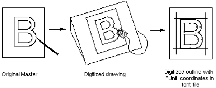
From Font File to Paper
This section describes the process that allows glyphs from a TrueType font file to be displayed on raster devices.
First, the outline stored in the font file is scaled to the requested size. Once scaled, the points that make up the outline are no longer recorded in the font units (FUnits) used to describe the original outline, but have become device-specific pixel coordinates.
Next, the instructions associated with this glyph are carried out by the interpreter. The result of carrying out the instructions is a grid-fitted outline for the requested glyph. This outline is then scan-converted to produce a bitmap that can be rendered on the target device.
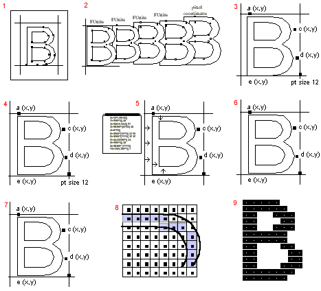
- Digitize outline with FUnit coordinates in TrueType font file
- Scaler converts FUnits to pixel coordinates and scales outline to size requested by application
- Outline “sized” to new grid
- Scaled outline with pixel coordinates
- Interpreter executes instructions associated with glyph “B” and grid-fits
- Grid-fitted outline
- Grid-fitted outline
- Scan converter decides which pixels to turn on
- Bitmap is rendered on raster device
Digitizing a Design
This section describes the coordinate system used to establish the locations of the points that define a glyph outline. It also documents the placement of glyphs with respect to the coordinate axes.
Outlines
In a TrueType font, glyph shapes are described by their outlines. A glyph outline consists of a series of contours. A simple glyph may have only one contour. More complex glyphs can have two or more contours. Composite glyphs can be constructed by combining two or more simpler glyphs. Certain control characters that have no visible manifestation will map to the glyph with no contours.
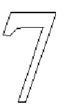
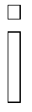
Contours are composed of straight lines and curves. Curves are defined by a series of points that describe second-order Bezier-splines. The TrueType Bezier-spline format uses two types of points to define curves, those that are on the curve and those that are off the curve. Any combination of off and on curve points is acceptable when defining a curve. Straight lines are defined by two consecutive on curve points.
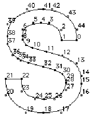
The points that make up a curve must be numbered in consecutive order. It makes a difference whether the order is increasing or decreasing in determining the fill pattern of the shapes that make up the glyph. The direction of the curves has to be such that, if the curve is followed in the direction of increasing point numbers, the black space (the filled area) will always be to the right.
FUnits and the em square
In a TrueType font file point locations are described in font units, or FUnits. An FUnit is the smallest measurable unit in the em square, an imaginary square that is used to size and align glyphs. The dimensions of the em square typically are those of the full body height of a font plus some extra spacing to prevent lines of text from colliding when typeset without extra leading.
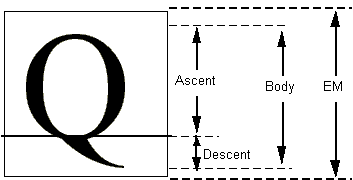
While in the days of metal type, glyphs could not extend beyond the em square, digital typefaces are not so constrained. The em square may be made large enough to completely contain all glyphs, including accented glyphs. Or, if it proves convenient, portions of glyphs may extend outside the em square. TrueType fonts can handle either approach, so the choice is that of the font manufacturer.
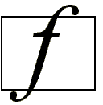
The em square defines a two-dimensional coordinate grid whose x-axis describes movement in a horizontal direction and whose y-axis describes movement in a vertical direction. This is discussed in more detail in the following section.
FUnits and the grid
A key decision in digitizing a font is determining the resolution at which the points that make up glyph outlines will be described. The points represent locations in a grid whose smallest addressable unit is known as an FUnit or font Unit. The grid is a two-dimensional coordinate system whose x-axis describes movement in a horizontal direction and whose y-axis describes movement in a vertical direction. The grid origin has the coordinates (0,0). The grid is not an infinite plane. Each point must be within the range -16384 and +16383 FUnits. Depending upon the resolution chosen, the range of addressable grid locations will be smaller.
The choice of the granularity of the coordinate grid—that is, number of units per em (upem)—is made by the font manufacturer. Outline scaling will be fastest if units per em is chosen to be a power of 2, such as 2048.
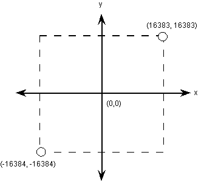
Note: The number of units per em is always the same in both x and y directions.
The origin of the em square need not have any consistent relationship to the glyph outlines. In practice, however, applications depend upon the existence of some convention for the placement of glyphs for a given font. For Roman fonts, which are intended to be laid out horizontally, a y-coordinate value of 0 typically is assumed to correspond to the baseline of the font; this is indicated explicitly in a font using bit 0 of the flags field of the font’s 'head' table. No particular meaning is assigned to an x-coordinate of 0 but manufacturers may improve the performance of applications by choosing a standard meaning for the x origin.
As a general term, left side bearing refers to the relationship along the x-axis between the initial pen position and the leftmost extreme outline point. The left side bearing point is a virtual outline point (see “Phantom points”) that corresponds to the initial pen position. The 'hmtx' table provides a left side bearing value for each glyph that provides the x-coordinate difference between the left side bearing point and the leftmost extreme outline point. This allows an application to determine the x-axis relationship of the em square origin and the pen position. To improve performance, bit 1 of the flags field of the 'head' table can be set to indicate that the left side bearing point is at x = 0 for all glyphs, though this is not required.
For example, you might place a glyph so that its aesthetic center is at the x-coordinate value of 0. That is, a set of glyphs so designed when placed in a column such that their x-coordinate values of 0 are coincident will appear to be nicely centered. This option would be used for Kanji or any fonts that are typeset vertically. Another alternative is to place each glyph so that its leftmost extreme outline point has an x-value equal to the left side bearing of the glyph. Fonts created in this way may allow some applications to print more quickly to PostScript printers.
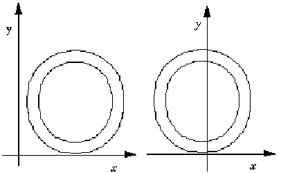
In fonts for different scripts, various conventions might be preferred for the meaning of the x origin and y origin. For best results with high-lighting and carets, the body of the character should be roughly centered within the advance width. For example, a symmetrical character would have equal left and right side bearings.
The granularity of the em square is determined by the number of FUnits per em, or more simply units per em. The em square as divided into FUnits defines a coordinate system with one unit equaling an FUnit. All points defined in this coordinate system must have integral locations. The greater the number of units per em, the greater the precision available in addressing locations within the em square.
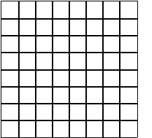
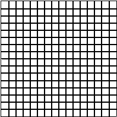
FUnits are relative units because they vary in size as the size of the em square changes. The number of units per em remains constant for a given font regardless of the point size. The number of points per em, however, will vary with the point size of a glyph. An em square is exactly 9 points high when a glyph is displayed at 9 points, exactly 10 points high when the font is displayed at 10 points, and so on. Since the number of units per em does not vary with the point size at which the font is displayed, the absolute size of an FUnit varies as the point size varies.
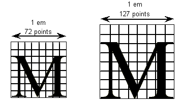
Because FUnits are relative to the em square, a given location on a glyph will have the same coordinate location in FUnits regardless of the point size at which the font is rendered. This is convenient because it makes it possible to instruct outline points once considering only the original outline and have the changes apply to the glyph at whatever size and resolution it is ultimately rendered.
Scaling a glyph
This section describes how glyph outlines are scaled from the master size stored in the font file to the size requested by an application.
Device space
Whatever the resolution of the em square used to define a glyph outline, before that glyph can be displayed it must be scaled to reflect the size, transformation and the characteristics of the output device on which it is to be displayed. The scaled outline must describe the character outline in units that reflect an absolute rather than relative system of measurement. In this case the points that make up a glyph outline are described in terms of pixels.
Intuitively, pixels are the actual output bits that will appear on screen or printer. To allow for greater precision in managing outlines, TrueType describes pixel coordinates to the nearest sixty-fourth of a pixel.
Converting FUnits to pixels
Values in the em square are converted to values in the pixel coordinate system by multiplying them by a scale. This scale is:
pointSize * resolution / ( 72 points per inch * units_per_em )
where pointSize is the size at which the glyph is to be displayed, and resolution is the resolution (dots or pixels per inch) of the output device. The 72 in the denominator reflects the number of points per inch.
For example, assume that a glyph feature is 550 FUnits in length on a 72-dpi screen at 18 point. Also assume that there are 2048 units per em. The following calculation reveals that the feature is 4.83 pixels long.
550 * 18 * 72 / ( 72 * 2048 ) = 4.83
Display device characteristics
The resolution of any particular display device is specified by the number of dots or pixels per inch (dpi) that are displayed. For example, a VGA display under Windows is treated as a 96-dpi device, and most laser printers have a resolution of 300 dpi or higher. Some devices may have different resolution in the horizontal and vertical directions (i.e. non-square pixels); for example, legacy EGA displays had a resolution of 96 dpi x 72 dpi. In such cases, horizontal dots per inch must be distinguished from vertical dots per inch.
The number of pixels per em is dependent on the resolution of the output device. An 18-point character will have 18 pixels per em on a 72-dpi device. Change the device resolution to 300 dpi and it has 75 pixels per em, or change to 1200 dpi and it has 300 pixels per em.
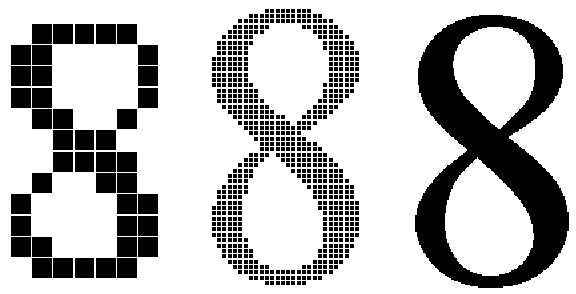
Displaying type on a particular device at a specific point size yields an effective resolution measured in pixels per em (ppem). The formula for calculating pixels per em is:
ppem = pointSize * dpi / 72
= (pixels per inch) * (inches per pica point) * (pica points per em)
On a 300-dpi laser printer, a 12-point glyph would have 12*300/72 or 50 ppem. On a typesetter with 2400 dpi, it would have 12*2400/72 or 400 ppem. On a VGA display, a 12-point glyph would have 12*96/72 or 16 ppem. Similarly, the ppem for a 12-point character on a 72-dpi device would be 12*72/72, or 12. This last calculation points to a useful rule of thumb: on any 72-dpi device, points and pixels per em are equal.
Note: In digital typography, an inch contains exactly 72 points. In traditional typography, however, an inch contains 72.2752 points (rather than 72); that is, one point equals .013836 inches.
If you know the ppem, the formula to convert between FUnits and pixel space coordinates is:
pixel_coordinate = em_coordinate * ppem / upem
An em_coordinate position of (1024, 0) would yield a device_pixels coordinate of (6, 0), given 2048 units per em and 12 pixels per em.
Grid-fitting a glyph outline
The fundamental task of instructing a glyph is one of identifying the critical characteristics of the original design and using instructions to ensure that those characteristics will be preserved when the glyph is rendered at different sizes on different devices. Consistent stem weights, consistent color, even spacing, and the elimination of pixel dropouts are common goals.
To accomplish these goals, it is necessary to ensure that the correct pixels are turned on when a glyph is rasterized. It is the pixels that are turned on that create the bitmap image of the glyph. Since it is the shape of the glyph outline that determines which pixels will make up the bitmap image of that character at a given size, it is sometimes necessary to change or distort the original outline description to produce a high-quality image. This distortion of the outline is known as grid-fitting.
The figure below illustrates how grid-fitting a character distorts the outline found in the original design.
As the illustration above suggests, the grid-fitting employed in TrueType goes well beyond aligning a glyph’s left side bearing to the pixel grid. This sophisticated grid-fitting is guided by instructions. The beneficial effects of grid-fitting are illustrated in the next figure.
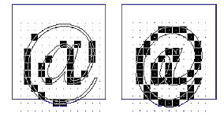
Grid-fitting is the process of stretching the outline of a glyph according to the instructions associated with it. Once a glyph is grid-fitted, the point numbers will be unchanged but the actual location of that point in the coordinate grid may have shifted. That is, the coordinates for a given point number will, very likely, have changed after a glyph is grid-fitted.
What are instructions?
The TrueType instruction set provides a large number of commands designed to allow designers to specify how character features should be rendered. Instructions are the mechanism by which the design of a character is preserved when it is scaled. In other words, instructions control the way in which a glyph outline will be grid-fitted for a particular size or device.
Instructing a glyph will reshape the outline at a specific size on a given target device in such a way that the correct pixels are included within its outline. Reshaping the outline means moving outline points. Points that have been acted upon by an instruction are said to have been touched. Note that a point need not actually be moved to be touched. It must simply be acted upon by an instruction. (See the MDAP instruction, for example.)
TrueType fonts can be used with or without instructions. Uninstructed fonts will generally produce good quality results at sufficiently high resolutions and point sizes. The range of sizes over which an uninstructed font will produce good quality results depends not only on the output device resolution and point size of the character but also on the particular font design. The intended use of the font can also be a factor in determining whether or not a particular font should be instructed. For most fonts, if legibility of small point sizes on low resolution devices is important, adding instructions will be critical.
Instructing a font is a process that involves analyzing the key elements of a glyph’s design and using the TrueType instruction set to ensure that they are preserved. The instructions are flexible enough to allow characteristics that are roughly the same to be “homogenized” at small sizes while allowing the full flavor of the original design to emerge at sizes where there are sufficiently many pixels.
How does the TrueType interpreter know the manner in which an outline should be distorted to produce a desirable result? This information is contained in instructions attached to each glyph in the font. Instructions specify aspects of a glyph’s design that are to be preserved as it is scaled. For example, using instructions it is possible to control the height of an individual glyph or of all the glyphs in a font. You can also preserve the relationship between design elements within a glyph thereby ensuring, for example, that the widths of the three vertical stems in the lowercase m will not differ dramatically at small sizes.
The following figure illustrates how changing a glyph’s outline at a specific size will yield a superior result. They show that an uninstructed 9-point Arial lowercase m suffers the loss of a stem due to chance effects in the relationship of stems to pixel centers. In the second glyph, instructions have aligned the stems to the grid so that the glyph suffers no similar loss.
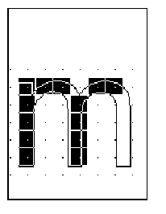
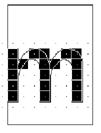
The TrueType interpreter
This section describes the actions of the TrueType interpreter. It is the interpreter, as the name suggests, that “interprets” or carries out the instructions.
More concretely, the interpreter processes a stream or sequence of instructions. Typically, these instructions take their arguments from the interpreter stack and place their results on that stack. The only exceptions are a small number of instructions that are used to push data onto the interpreter stack. These instructions take their arguments from the instruction stream.
All of the interpreter’s actions are carried on in the context of the Graphics State, a set of variables whose values guide the actions of the interpreter and determine the exact effect of a particular instruction. See The Graphics State, below, for more information.
The interpreter’s actions can be summarized as follows:
The interpreter fetches an instruction from the instruction stream, an ordered sequence of instruction opcodes and data. Opcodes are 1-byte in size. Data can consist of a single byte or two bytes (a word). If an instruction takes words from the instruction stream it will create those words by putting together two bytes. Words are in big-endian order: the high byte appears first in the instruction stream and the low byte appears second.
The following instruction stream is depicted as it will be shown in the examples that follow. Note that the pointer indicates the next instruction to be executed.
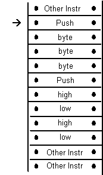
The instruction is executed
If it is a push instruction it will take its arguments from the instruction stream.
Any other instruction will pop any data it needs from the stack. A pop is illustrated below.
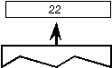
Any data the instruction produces is pushed onto the interpreter stack. A push is illustrated below.
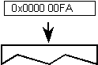
As the previous discussion indicates, the interpreter stack is a LIFO or last in first out data structure. An instruction takes any data it needs from the last item placed on the stack. The action of removing the top item from the stack is commonly termed a pop. When an instruction produces some result, it pushes that result to the top of the stack where it is potential input to the next instruction.
The instruction set includes a full range of operators for manipulating the stack including operators for pushing items onto the stack, popping items from the stack, clearing the stack, duplicating stack elements and so forth.
The effect of execution depends on the values of the variables that make up the Graphics State.
The instruction may modify one or more Graphics State variables. In the illustration shown, the Graphics State variable rp0 is updated using a value taken from the interpreter stack.
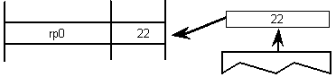
3.The process is repeated until there are no further instructions to be executed.
Using instructions
Instructions can appear in a number of places in the font file tables that make up a TrueType font. They can appear as part of the font program, the control value program, or as glyph data. Instructions appearing in the first two apply to the font as a whole. Those found in glyph data (the 'glyf' table) apply to individual glyphs within a font.
The interpreter stack is cleared for each run of a font program, control value program, or glyph program.
The font program
The font program is stored in the 'fpgm' table of a font and consists of a set of instructions that is executed once, the first time a font is accessed by an application. It is used to create function definitions (FDEFs) and instruction definitions (IDEFs). Functions and instructions defined in the font program may be used in the control value program or in glyph programs. Functions and instructions defined in the font program may also be re-defined in the control value program.
The control value program
The control value program is stored in the 'prep' table of a font and consists of a set of instructions executed every time the pixels per em in x or y direction changes or the transformation changes. It is used to make font wide changes in the Control Value Table rather than to manage individual glyphs.
The Control Value Table, or CVT, is a numbered list of values used to simplify the task of maintaining consistency across glyphs when instructing a font. The CVT is initialized from the font’s 'cvt ' table, and then managed using instructions in the control value program. (See Managing the Control Value Table.) Entries in the CVT can be referenced by either of two indirect instructions (MIRP and MIAP). CVT entries can be used to store values that need to be the same across a number of glyphs in a font. For example, an instruction might refer to a CVT entry whose purpose is to regularize stem weights across a font.
| Entry # | Value | Description |
|---|---|---|
| 0 | 0 | uppercase and lowercase flat base(base line) |
| 1 | -39 | uppercase round base |
| 2 | -35 | lowercase round base |
| 3 | -33 | figure round base |
| 4 | 1082 | x-height flat |
| 5 | 1114 | x-height round overlap |
| 6 | 1493 | flat cap |
| 7 | 1522 | round cap |
| 8 | 1463 | numbers flat |
| 9 | 1491 | numbers round top |
| 10 | 1493 | flat ascender |
| 11 | 1514 | round ascender |
| 12 | 157 | x stem weight |
| 13 | 127 | y stem weight |
| 14 | 57 | serif |
| 15 | 83 | space between the dot and the I |
Instructions that refer to values in the CVT are called indirect instructions as opposed to the direct instructions which take their values from the glyph outline.
As part of the TrueType font file, the values in the CVT are expressed in FUnits. When the outlines are converted from FUnits to pixel units, values in the CVT are also converted.
When writing to the CVT you may use a value that is in the glyph coordinate system (using WCVTP) or you can use a value that is in the original FUnits (using WCVTF). The interpreter will scale all values appropriately. Values read from the CVT are always in pixels (F26Dot6).
The control value program may also be used to set Graphics State variables (see The Graphics State below.) The control value program can determine whether such changes to Graphics State variables will be visible to glyph programs using the INSTCTRL instruction.
The control value program may also be used to define functions or instructions, or to re-define functions or instructions defined in the Font Program. The most recent definition of a given function or instruction is used in subsequent glyph programs. If a function or instruction is first defined in a Font Program, later re-defined in the control value program, but not re-defined again when the control value program is run on another size or transform change, the re-definition from the earlier control value program run is used.
Every time the control value program is run, the zone 0 (the “twilight zone”) contour data is initialized to 0s. (See Zones in the Instructing TrueType Glyphs chapter for details regarding zone 0.)
The Storage Area
The interpreter also maintains a Storage Area consisting of a portion of memory that can be used for temporary storage of data from the interpreter stack. Values can be written in the storage area by the font program, the control value program, or glyph programs. Values written by the font program can be used in the control value program or glyph programs. Similarly, values written in the control value program can be used in glyph programs. See Glyph programs and persistence regarding values written in glyph programs. Instructions exist that make it possible to read the values of stored data and to write new values to storage. Storage locations range from 0 to n-1 where n is the value established in the maxStorage entry in the maxProfile table of the font file. Values are 32-bit numbers.
| Address | Value |
|---|---|
| 0 | 343 |
| 1 | 241 |
| 2 | -27 |
| 3 | 4654 |
| 4 | 125 |
| 5 | 11 |
The Graphics State
The Graphics State consists of a table of variables and their values. All instructions act within the context of the Graphics State. Graphics State variables have default values as specified in Graphics State Summary. Their values can be determined or changed using instructions.
The Graphics State establishes the context within which all glyphs are interpreted. All Graphics State variables have a default value. Some of these values can be changed in the CVT Program if desired. Whatever the default value, it will be reestablished at the start of interpretation of any glyph. In other words, the Graphics State has no inter-glyph memory. Changing the value of a Graphics State variable while processing an individual glyph will result in a change that remains in effect only for that glyph.
Glyph programs and persistence
Glyph programs may write values in the storage area or the CVT. Implementations may persist storage or CVT values set in a glyph program after the glyph program has ended, allowing those values to be used in other glyph programs, or (for storage values only) in subsequent runs of the control value program. Implementations may also opt not to do this; that is, when a glyph program ends, implementations may reset storage and CVT variables to their earlier values before that glyph program was run. Also note that implementations can cache the results after a glyph program is run. For these reasons, font developers should not assume that values set when a glyph program is run can be used to affect glyphs that are subsequently displayed by an application (for example, to simulate gradual degradation of a typewriter ribbon).
A glyph program may change contour data in zone 0 (the “twilight zone”). These values should always persist until the next time the control value program is run.
Composite glyphs require special consideration in this regard. When a composite glyph is processed, implementations should process component glyphs, including running their glyph programs, rather than relying on previously cached results for the component glyphs. Also, storage and CVT values in the glyph program of a component glyph should be available to the composite glyph program, even if the implementation does not otherwise persist these values after the glyph program is run when the glyph is used alone as a simple glyph.
The scan converter
The TrueType scan converter takes an outline description of a glyph and produces a bitmap image for that glyph.
The TrueType scan converter offers two modes: with or without dropout control, which is described below. In the mode without dropout control, the scan converter uses a simple algorithm for determining which pixels are part of that glyph. The rules can be stated as follows:
Rule 1
If a pixel’s center falls within the glyph outline, that pixel is turned on and becomes part of that glyph.
Rule 2
If a contour falls exactly on a pixel’s center, that pixel is turned on.
A point is considered to be an interior point of a glyph if it has a non-zero winding number. The winding number is itself determined by drawing a ray from the point in question toward infinity. (The direction in which the ray points in unimportant.) Starting with a count of zero, we subtract one each time a glyph contour crosses the ray from right to left or bottom to top. Such a crossing is termed an on transition. We add one each time a contour of the glyph crossed the ray from left to right or top to bottom. Such a crossing is termed an off transition. If the final count is non-zero, the point is an interior point.
The direction of a contour can be determined by looking at the point numbers. The direction is always from lower point number toward higher point number.
The illustration that follows demonstrates the use of winding numbers in determining whether a point is inside a glyph. The point p1 undergoes a sequence of four transitions (on transition, off transition, on transition, off transition). Since the sequence is even, the winding number is zero and the point is not inside the glyph. The second point, p2, undergoes an off transition followed by an on transition followed by an off transition yielding a winding number of +1. The point is in the interior of the glyph.
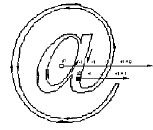
What is a dropout?
A dropout occurs whenever there is a connected region of a glyph interior that contains two black pixels that cannot be connected by a straight line that only passes through black pixels.
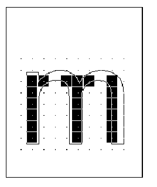
Preventing dropouts
The TrueType instructions are designed to allow you to grid-fit a glyph so that the desired pixels will be turned on by the simple scan converter regardless of the point size or the transformation used. It may prove difficult to foresee all possible transformations that a glyph might undergo. It is therefore difficult to instruct a glyph to ensure that the proper grid-fitting distortion of the outline will take place for every desired transformation. This problem is especially difficult for very small numbers of pixels per em and for complex typefaces. In these situations, some renditions of a glyph may contain dropouts.
It is possible to test for potential dropouts by looking at an imaginary line segment connecting two adjacent pixel centers. If this line segment is intersected by both an on-Transition contour and an off-Transition contour, a potential dropout condition exists. The potential dropout only becomes an actual dropout if the two contour lines continue on in both directions to cut other line segments between adjacent pixel centers. If the two contours join together immediately after crossing a scan line (forming a stub), a dropout does not occur, although a stem of the glyph may become shorter than desired.
To prevent dropouts, type manufacturers can choose to have the scan converter use two additional rules:
Rule 3
If a scan line between two adjacent pixel centers (either vertical or horizontal) is intersected by both an on-Transition contour and an off-Transition contour and neither of the pixels was already turned on by rules 1 and 2, turn on the left-most pixel (horizontal scan line) or the bottom-most pixel (vertical scan line)
Rule 4
Apply Rule 3 only if the two contours continue to intersect other scan lines in both directions. That is do not turn on pixels for “stubs”. The scanline segments that form a square with the intersected scan line segment are examined to verify that they are intersected by two contours. It is possible that these could be different contours than the ones intersecting the dropout scan line segment. This is very unlikely but may have to be controlled with grid-fitting in some exotic glyphs.
The type manufacturer can choose to use the simple scan converter employing rules 1 and 2 only or may optionally invoke either rule 3 or rule 4. The decision about which scan converter mode to use is controlled using the SCANCTRL instruction. It can be made on a font-wide basis, or a different choice can be specified for each glyph. The selection made in the control value program will be the default for the entire font. A change made to the default in the instructions for an individual glyph will apply only to that glyph.
Collaborate with us on GitHub
The source for this content can be found on GitHub, where you can also create and review issues and pull requests. For more information, see our contributor guide.
OpenType specification